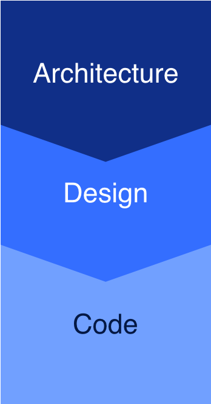
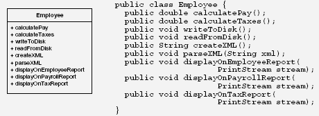
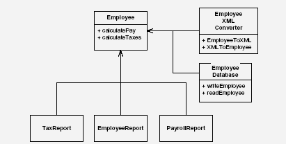
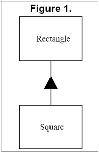
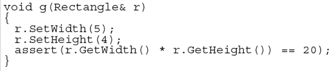
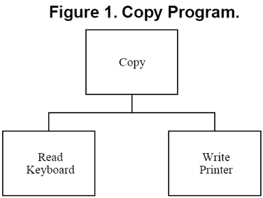
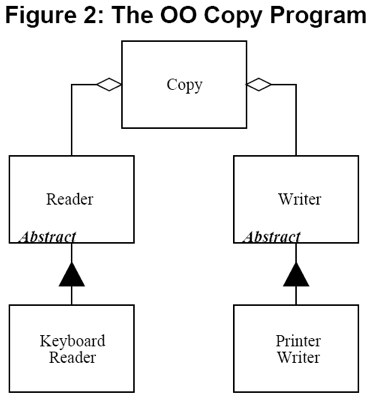

Scrum for developers - Sprint 4
Code Quality: Refactoring & Design
Code Quality
Expectations:
|
Definition of Done:
|
Why design is important
|
 |
Okay, but where do I start?
Start with a basic set of design principles
| S | O | L | I | D |
| SRP | OCP | LSP | ISP | DIP |
| Single Responsibility Principle | Open Closed Principle | Liskov Substitution Principle | Interface Segregation Principle | Dependency Inversion Principle |
SOLID explained
SRP |
Single Responsibility Principle | A class should have one, and only one, reason to change |
|---|---|---|
OCP |
Open Closed Principle | Open for extension, closed for modification: You should be able to extend a classes behavior, without modifying it |
LSP |
Liskov Substitution Principle | Derived classes must be substitutable for their base classes |
ISP |
Interface Segregation Principle | Clients should not be forced to depend upon interfaces that they do not use: Make fine grained interfaces that are client specific |
DIP |
Dependency Inversion Principle | Depend on abstractions, not on concretions: Abstractions should not depend upon details. Details should depend upon abstractions |
Single Response Principle
|  |
|  |
Liskov Substitution Principle
|  |  |
Dependency Inversion Principle
|  |  |